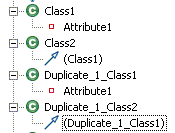

Aurora Use Case Analysis Document:
Duplicate Menu
| Version: 1.01 |
Date: Mar. 7, 2005 |
Contents
Introduction
[back to top]
The duplicate menu creates
a deep copy of the element(s) or view(s) selected. Duplicating a set of model elements will create a copy of the elements and all the relationships between them. Duplicating a set of views on a diagram will create a copy of the underlying elements (if applicable) and create a copy of the views on the diagram that now reference the copied elements.
References
[back to top]
- Rose RealTime behavior.
- Copy
/ Paste behavior in RSA.
Traceability
[back to top]
RATLC00519284
Support "Duplicate" functionality.
Requirements
[back to top]
- The duplicate behavior can be invoked on a selection in one of
three ways:
- By right-clicking and selecting the Duplicate menu. The Duplicate menu will appear near the Copy menu and in an Edit submenu if one is available.
- By selecting the Edit > Duplicate menu on the toolbar.
- By pressing Ctrl Shift D.
- The basic duplicate behavior to duplicate UML elements and views on a diagram will be available at the core platform level. Modeler will use this basic behavior. It must be implemented so that if a client wishes to support duplicating custom elements on a diagram, it would be possible to use the default duplicate UML elements functionality or provide their own duplicate elements functionality.
Constraints and Limitations
[back to top]
- Duplicating a diagram will only duplicate the diagram and its views and not duplicate the semantic elements.
- Duplicating a model will do the same as if the user had created a new model using the model they want to duplicate as a template. At this time, this will not be implemented. Further investigation needs to take place to see if this is possible.
- When duplicating model elements, the duplicate menu will only be enabled on elements that support duplication. The following elements do not support duplication at this time:
- Any element in a container that can only have one element of its type (e.g. the expression of a constraint).
- When duplicating views on a diagram, the duplicate menu will only be enabled on views that support duplication. The following views to not support duplication at this time:
- Any view for which the underlying semantic element cannot be duplicated.
- Any views on a sequence diagram. (It is much more difficult to implement on sequence diagrams as the location matters in the ordering of messages. At this point it is not deemed beneficial enough to the user to implement.)
- Any connector views for which the ends are not also selected.
Use Cases
[back to top]
Duplicate a model element in Model Explorer.
[back to use cases]
Flow of events:
- The user selects one or more elements in the Model Explorer.
- The user initiates a duplicate action.
- The selected element(s) are duplicated.
Postconditions:
- The duplicated elements will have Duplicate_X appended to their original name
where X is the lowest integer that creates a unique name within its
container.
- The duplicated elements are created in the same container as its original element.
- A deep copy of the elements are created. Any references in a
duplicated element to other elements that were also duplicated will now
reference the new duplicated element (e.g. see generalization
relationship below). Any references in a non-duplicated element to an element that was duplicated, will remain the same.

Duplicate a notation-only view on a diagram.
[back to use cases]
Flow of events:
- The user selects one or more notation-only views on a diagram.
- The user initiates a duplicate action.
- The selected views are duplicated.
Postconditions:
- Connectors are only duplicated if they are selected as well.
- The duplicated views look the same as the original views (i.e. all view properties are also copied).
- The duplicated views are located just below and to the right of the
original views.
- The duplicated views are selected.

Duplicate a view with a semantic model element on a diagram.
[back to use cases]
Flow of events:
- The user selects one or more views with a semantic model element on a diagram.
- The user initiates a duplicate action.
- The selected views and underlying elements are duplicated.
Postconditions:
- The underlying model elements are duplicated just as if the user
had performed a duplicate on the elements in model explorer. See Use Case 1.
- Connectors are only duplicated if they are selected as well.
- The duplicated views look the same as the original views (i.e. all
view properties are also copied) except that they reference the new duplicated elements.
- The duplicated views are located just below and to the right of the
original views.
- The duplicated views are selected.